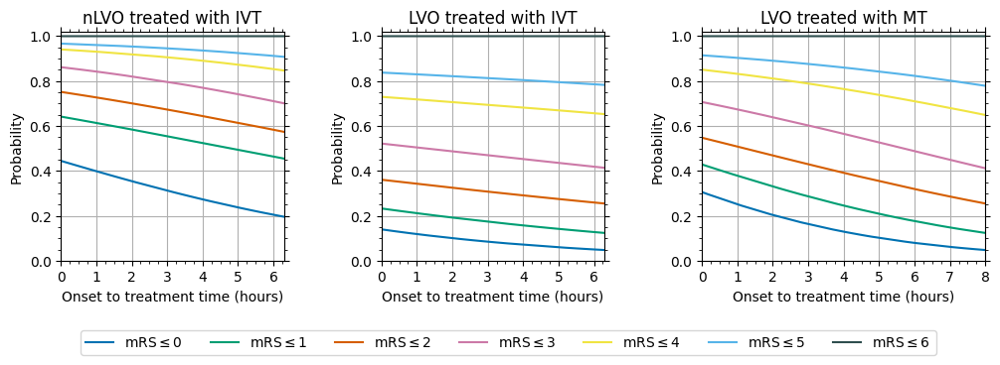
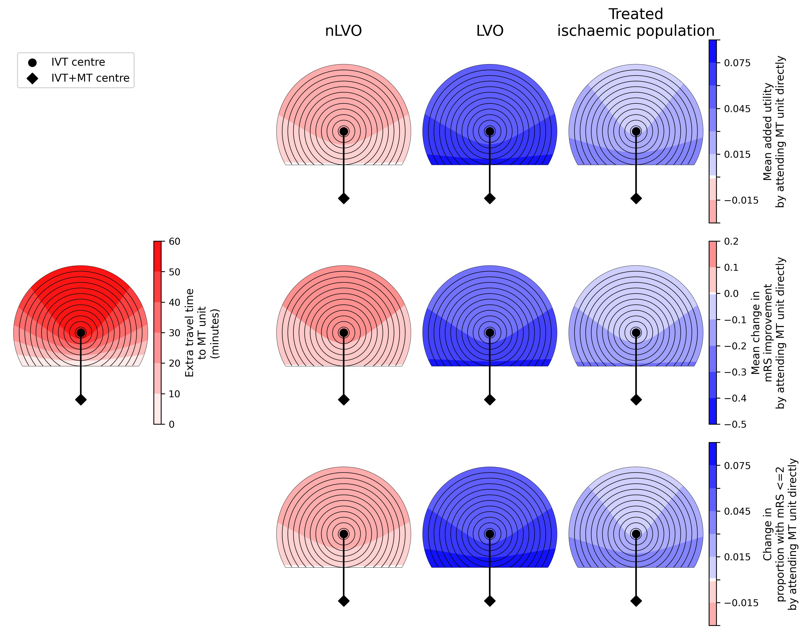
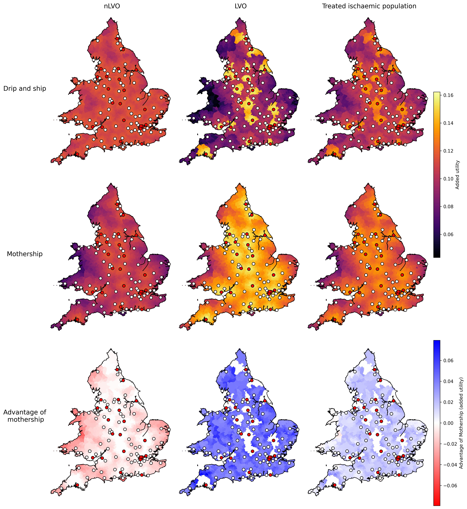
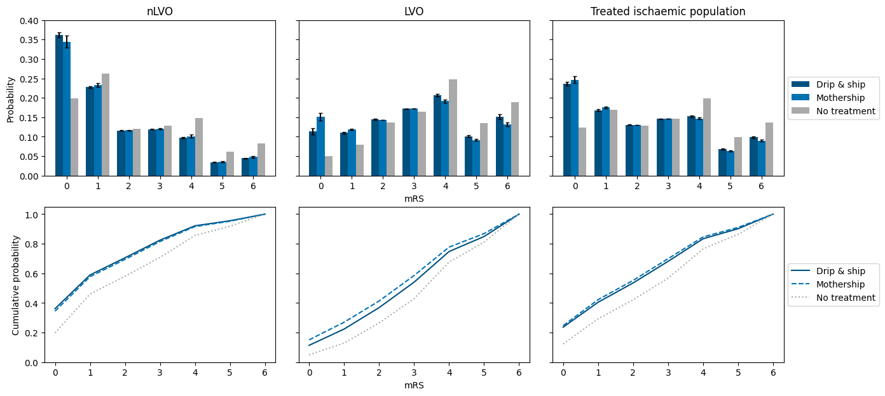
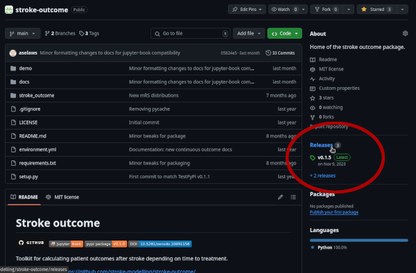
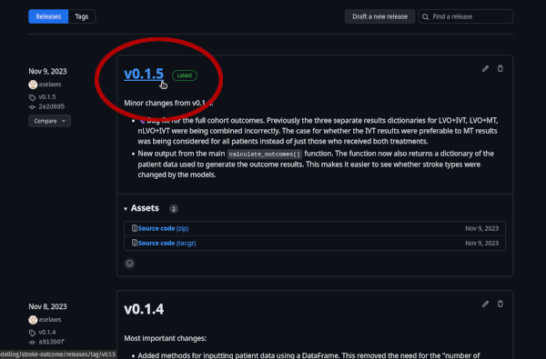
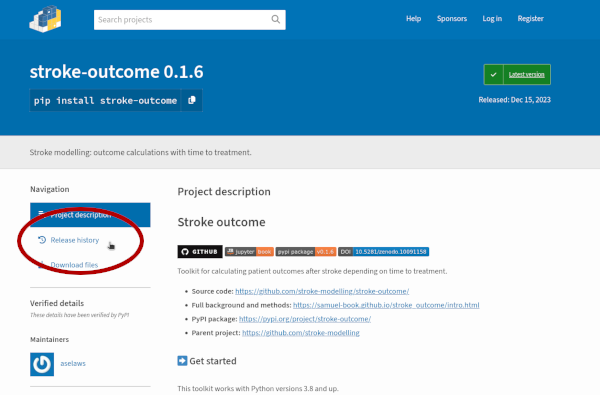
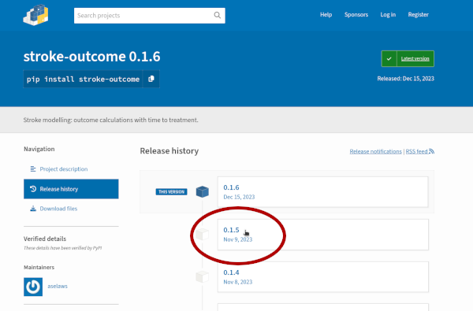

Paper creation#
This document provides more information on the main results in the academic paper about the stroke outcome model.
For each result, there are links to the pages in this online book where the data was created, and information on accessing the data shown in the paper’s figures and tables or referenced in the text.
The paper is “Modelling disability-level and utility outcome in stroke patients depending on time to intravenous thrombolysis and mechanical thrombectomy. Application to England and Wales”

Preview of the first page of the stroke outcome paper.
mRS distribution derivation#
Table 1 contains the derived mRS distributions:
import stroke_outcome.outcome_utilities
mrs_dists, mrs_dists_notes = (
stroke_outcome.outcome_utilities.import_mrs_dists_from_file())
mrs_dists
| mRS<=0 | mRS<=1 | mRS<=2 | mRS<=3 | mRS<=4 | mRS<=5 | mRS<=6 | |
|---|---|---|---|---|---|---|---|
| Stroke type | |||||||
| pre_stroke_nlvo | 0.583 | 0.746 | 0.850 | 0.951 | 0.993 | 1.000 | 1 |
| pre_stroke_lvo | 0.408 | 0.552 | 0.672 | 0.838 | 0.956 | 1.000 | 1 |
| no_treatment_lvo | 0.050 | 0.129 | 0.265 | 0.429 | 0.676 | 0.811 | 1 |
| no_treatment_nlvo | 0.198 | 0.460 | 0.580 | 0.708 | 0.856 | 0.918 | 1 |
| no_effect_nlvo_ivt_deaths | 0.196 | 0.455 | 0.574 | 0.701 | 0.847 | 0.908 | 1 |
| no_effect_lvo_ivt_deaths | 0.048 | 0.124 | 0.255 | 0.414 | 0.653 | 0.783 | 1 |
| no_effect_lvo_mt_deaths | 0.048 | 0.124 | 0.255 | 0.412 | 0.649 | 0.779 | 1 |
| t0_treatment_nlvo_ivt | 0.445 | 0.642 | 0.752 | 0.862 | 0.941 | 0.967 | 1 |
| t0_treatment_lvo_ivt | 0.140 | 0.233 | 0.361 | 0.522 | 0.730 | 0.838 | 1 |
| t0_treatment_lvo_mt | 0.306 | 0.429 | 0.548 | 0.707 | 0.851 | 0.915 | 1 |
mrs_dists_notes.split('\n')
['# If these change, please ensure the no-effect times are still correct.',
'#',
'# Acronyms: No-effect times:',
'# lvo: large-vessel occlusion IVT: 378mins (6.3hr)',
'# nlvo: non-large-vessel occlusion MT: 480mins (8hr)',
'# ivt: intra-veneous thrombolysis',
'# mt: mechanical thrombectomy',
'# t0: time zero, zero minutes after stroke onset.',
'#',
'']
Data creation:
Data behind the table:
Stored on GitHub:
Location:
stroke_outcome/data/File name for mRS distributions:
mrs_dist_probs_cumsum.csvFile name for utility weight conversions:
utility_dists.csv
Or install the stroke-outcome package and import the data as above.
Probability with time#
Figure 1 contains the mRS probability distributions with time.

Data creation:
Resulting probabilities with time
The data behind the figure is stored on GitHub in the directory outcome_model_methods/output. The mRS values given are cumulative probabilities, e.g. the mRS<=2 column contains the sum of the probabilities of mRS of zero, one and two.
Data behind the figure:
nLVO with IVT:
probs_with_time_nlvo_ivt.csvLVO with IVT:
probs_with_time_lvo_ivt.csvLVO with MT:
probs_with_time_lvo_mt.csv
Supplementary data:
Calculating outcome probabilities with time to treatment - explains how the probabilities with time are calculated.
Geographic modelling (generic)#
Figure:

Data creation:
Distance-based treatment effects for many cohorts
Figure creation:
Plot distance-based treatment effects for many cohorts
Supplementary info:
Data behind the figure: Available on Github in the directory general_results/output:
Times:
generic_geography_grid_time_travel_directly_to_ivt.csv- time grid of travel directly to IVT centre in the middle of the grid.generic_geography_grid_time_travel_directly_diff.csv- time grid of difference in travel times to IVT centre in middle and MT centre at bottom of grid.generic_geography_dict_travel_grid.csv- dictionary of information needed to plot the time grids to scale.
Outcomes:
generic_geography_df_lvo_diff.csv- outcomes for the LVO patientsgeneric_geography_df_nlvo_ivt_diff.csv- outcomes for the nLVO patientsgeneric_geography_df_mixed_diff.csv- outcomes for the mixed treated ischaemic population
An example of how to import this data into Python for plotting is given in the Figure Creation notebook linked above.
Geographic modelling (England and Wales)#
Data creation:
Model outcomes for drip’and’ship vs mothership based on geography
Combine populations for weighted outcomes
Supplementary info:
Admission prediction
Maps#

Figure creation:
Mapping LSOA results
The data behind the figure is stored on GitHub in the directory england_wales/output.
Data behind the figure:
fig_data_englandwales_maps_added_utility.csv
Supplementary data:
Outlier regions mentioned in the Discussion: Mapping outliers
mRS distributions#

Figure creation:
National mRS distributions
The data behind the figure is stored on GitHub in the directory england_wales/output.
Data behind the figure:
Bars:
fig_data_mrs_dists.csvErrorbars:
fig_data_mrs_dists_std.csv
Supplementary data:
Mean shift in mRS, added utility, proportion with mRS<=2:
fig_data_mrs_dists_means.csvCHECK THIS - file not uploaded yet?
Data creation date#
The code was last re-run and so the data created on:
import datetime
print(datetime.date.today().strftime('%d %B %Y'))
19 July 2024
All package versions#
The full list of packages used is provided in a conda environment.
The packages are:
import os
with open(os.path.join('..', 'environment.yml'), 'r') as f:
print(f.read())
name: stroke-outcome
channels:
- defaults
- conda-forge
dependencies:
- jupyterlab
- matplotlib
- numpy
- pip
- pandas
- python=3.10
- scikit-learn
- pip:
- geopandas
- contextily
- mapclassify
- stroke-outcome
- stroke_maps
Custom package versions#
The versions of the custom packages used were:
import stroke_outcome
stroke_outcome.__version__
'0.1.6'
import stroke_maps
stroke_maps.__version__
'0.5.0'
The code in the packages for those version numbers can be seen by:
Downloading a specific version of the package. For example, instead of the usual:
pip install stroke-outcome
You could download:
pip install stroke-outcome==0.1.5
And continue to use the package as normal.GitHub: on the main repository page, the “Releases” section lists all of the versions. The tag with the version number opens the branch with a copy of the code at that time.
 
PyPI: the main project page has a “Release history” section. In it there are links to all previous versions of the package.
 